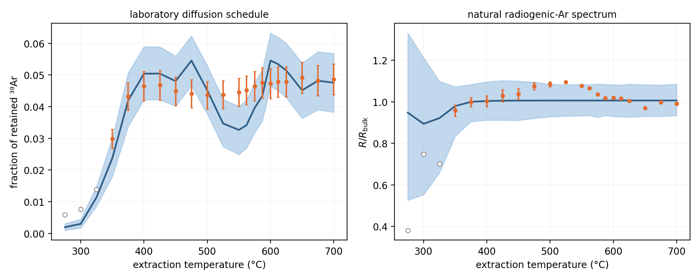
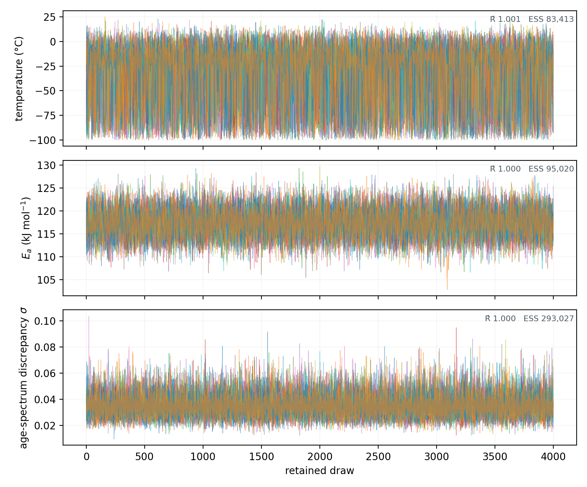
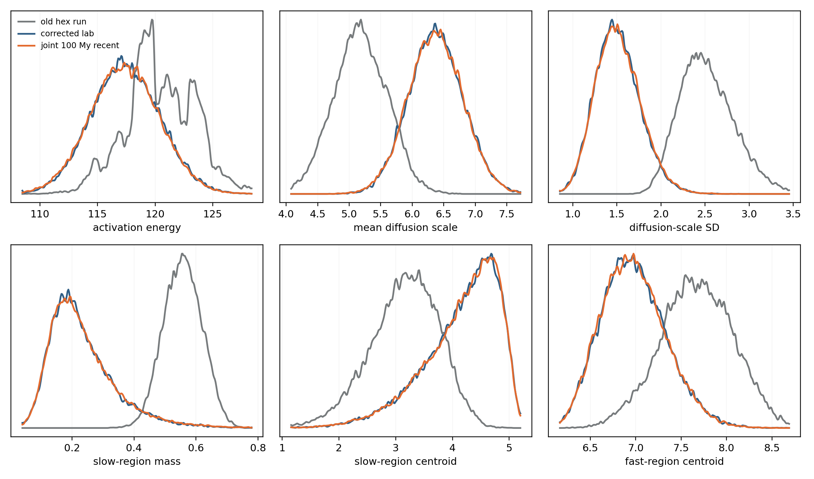

cold Mars analysis
Current status: one 64-chain expanded-ensemble run on eight A100s passed all sampler and mixture-traversal gates. The direct likelihood does not support a 100 My above-freezing excursion ending at the present. A 100 My excursion beginning 1 Ga ago crosses 0°C at the 97.5th percentile, but only 4.5% of that conditional posterior is above freezing.
what was inferred
The model fits two observations from Nakhla together: the laboratory ³⁹Ar release schedule and the natural normalized radiogenic-argon spectrum. The first constrains the diffusion-scale distribution and activation energy. The second constrains a constant-temperature excursion with a declared duration and onset time.
The diffusion distribution is a smooth probability vector over 28 values of ln(D₀/r²). The activation-energy prior is N(117, 5.4²) kJ/mol. Temperature has a uniform prior from −100 to 100°C. A fitted discrepancy term is added to the published natural-spectrum errors.

one run, not one refit per grid cell
Each grid cell s specifies an excursion duration and onset time. The sampler targets p(x) Σₛ πₛ p(y | x,s), where x contains the diffusion parameters and excursion temperature. The sum represents mutually exclusive thermal histories. A product would count the same observed spectrum repeatedly.
Every retained draw has a posterior responsibility for each cell. Responsibility-weighted draws recover p(x | y,s). A one-cell test agrees exactly with the original fixed-cell target. At matching cells, the production conditionals agree with the earlier independent fits to within their Monte Carlo error.
sampler diagnostics
| chains × retained draws | max R̂ | minimum bulk / tail ESS | divergences | max-depth transitions | minimum cell ESS | worst chain-mass deviation | gate |
|---|---|---|---|---|---|---|---|
| 64 × 4,000 | 1.0010 | 83,413 / 96,173 | 0 | 0 | 63,341 | 10.6% | pass |
Preset gates: max R̂ ≤ 1.01; divergence fraction ≤ 0.1%; maximum-depth fraction ≤ 1%; responsibility-weighted ESS ≥ 1,000 in every cell; chain-to-chain mean responsibility within 25% for every cell.


why the hex samples were not reused
The hex run and the joint run share a 28-bin diffusion parameterization, but not a posterior target. The hex run divided each step by all extracted ³⁹Ar and used the legacy one-mode approximation on the long-time release branch. The corrected model divides by the Shuster–Weiss retained total through 850°C and uses converged spherical eigenmodes.
Importance reweighting the 25,600-sample hex subset into the corrected laboratory target fails: Pareto k = 3.44, importance ESS 1.06, and maximum normalized weight 97.2%. The corrected target lies outside the useful support of the old sample.
A new corrected laboratory-only control used 64 chains × 4,000 draws. It passed with max R̂ 1.0005, minimum bulk/tail ESS 86,546/101,768, zero divergences, and zero depth hits.
The blue control and orange joint marginals agree. Across the six plotted summaries and every one of the 21 timing cells, density overlap is 93.2–96.0%. The gray hex marginals do not agree with them because they condition on the old laboratory target. This isolates the change: corrected laboratory physics moves the diffusion posterior; adding the natural spectrum mostly learns temperature.

conditional temperature results
| duration | onset before present | 2.5%, median, 97.5% (°C) | P(T > 0°C) |
|---|---|---|---|
| 10 My | 10 My | −93.88, −7.80, 7.22 | 21.2% |
| 100 My | 100 My | −94.45, −18.57, −4.47 | 0.252% |
| 100 My | 1,000 My | −95.76, −21.45, 1.81 | 4.53% |
| 200 My | 1,000 My | −95.75, −23.17, −2.63 | 0.863% |
| 500 My | 1,000 My | −95.52, −25.19, −8.77 | 0.019% |
The lower endpoints and medians are not estimates of Mars's climate. Once temperature is cold enough for negligible diffusion, the likelihood is almost flat. The long cold tail therefore depends on the −100°C prior bound. The upper endpoint is the useful constraint, and it also requires prior-sensitivity checks before publication.
scope
- Nakhla records roughly the last 1.3 Gy. It cannot test Noachian denudation several billion years ago.
- Shuster & Weiss's four-billion-year statement also used ALH84001. That meteorite is not in this likelihood.
- The event is constant temperature, and the model assumes no natural diffusion outside that one excursion.
- The laboratory predictive misses are structured around the middle of the heating schedule. The discrepancy model needs sensitivity analysis.
- The direct result is more restrictive than the superseded 1%-loss transform. The earlier +42°C result came from a non-mixing chain and a domain-ordering error.
Tracked model, manifests, summaries, figures, and compact posterior ↗